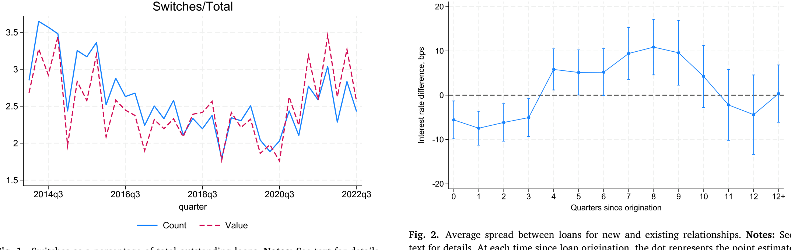
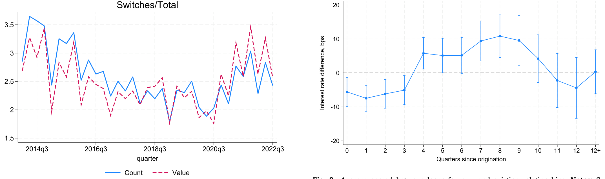
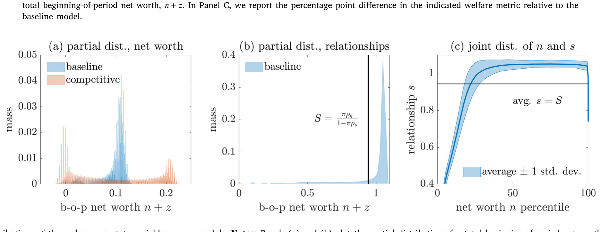
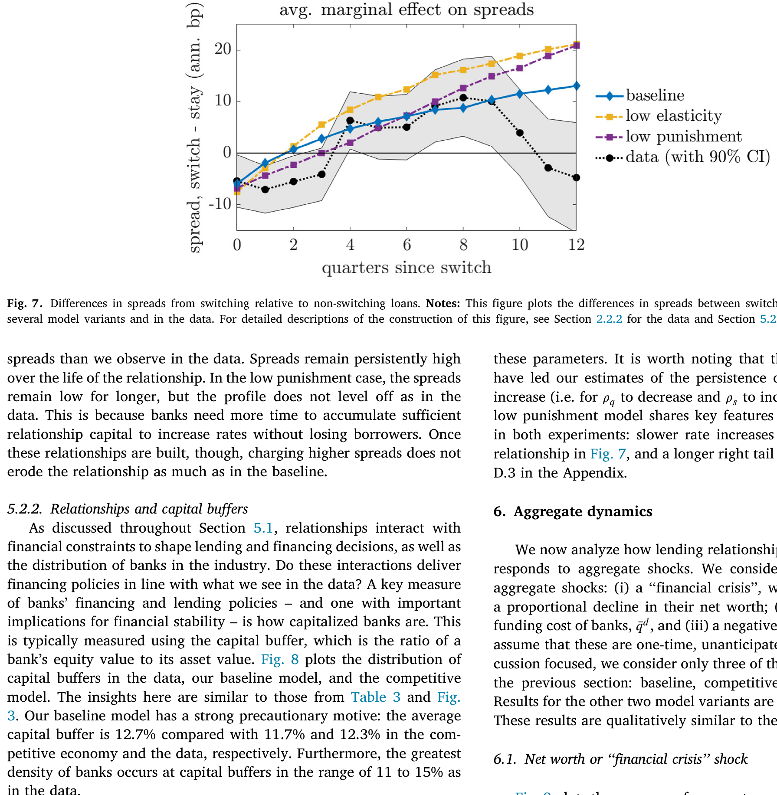
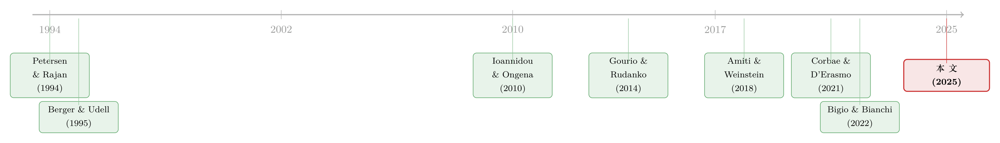

银行为什么舍得先亏本拉客？——把「关系」算进一国信贷的总账
本文读的是 Dempsey & Faria-e-Castro (2025, Journal of Financial Economics)：他们把「银行—企业关系」当作一种会随定价而消长的「客户资本」，写进一个有金融约束的异质性银行动态均衡模型，并用美国监管层的贷款级数据把关系的强度与持久性直接估出来。结论是——这套关系所隐含的市场势力，会让长期信贷规模缩水 5.9%；更要紧的是，它会把信贷供给冲击的真实负面影响放大一倍以上，却又能缓冲信贷需求冲击。
1 一个反常识的开场：银行为什么愿意先做亏本买卖？
先讲一个在贷款数据里反复出现、却很容易被忽略的现象。
一家企业第一次从某家新银行借钱时，它拿到的利率，往往比市场上同类老客户的利率还要低。听上去很反常——按理说银行对一个陌生借款人应该更谨慎、要更高的风险溢价才对。可数据偏偏说，新关系的头一年是「打折」的。然后呢？过了一年，这个利差由负转正，新客户开始支付高于老客户的利率，而且这个「溢价」会顽强地维持大约六个季度。
这就是所谓的「关系利率生命周期」：先低后高。它背后藏着一个朴素的商业逻辑——银行先用一个「诱饵价」(teaser rate) 把你拉过来，等你被「套牢」、转去别家又要付出代价时，再慢慢把当初让出的利润赚回来。
这其实就是产业组织里经典的「敲竹杠问题」(hold-up problem)：转换成本制造出事后的市场势力。Ioannidou & Ongena (2010) 用玻利维亚的征信数据最早把这条曲线画了出来；本文做的，是把它搬到美国、再算清楚它对整个信贷市场意味着什么。
于是一个自然的问题浮现：如果单家银行的这点「小算计」是真的，那么把全国成千上万家银行的这种算计加总起来，会对一国的信贷规模、对危机中信贷的涨落，造成多大的影响？这恰恰是本文要回答的核心问题——也是过去文献几乎没碰过的地方。
（关于银行如何凭借市场势力统一定价、把单个市场的竞争抽象掉，可参见《你以为银行在跟邻居竞争，其实它在全国统一调价》。）
2 两个把模型「钉死」在数据上的事实
在动手建模之前，作者先用数据立下两根桩。数据来自美联储的 FR Y-14Q（下称 Y-14）——这是覆盖美国最大几家银行控股公司 (BHC) 账上、承诺额超过 $1 million 的全部工商业贷款的季度面板。样本剔除了非美国地址、非美元、无美国税号的贷款，也剔除了金融与公共部门（NAICS 52/92）以及银团贷款。
事实一：换银行是件稀罕事。 作者沿用 Ioannidou & Ongena (2010) 的定义——一笔贷款若是新发放、且来自一家过去一年里与该企业没有可观察关系的银行，就算一次「转换」(switch)。结果，无论按金额还是按笔数算，转换贷款都只占存量贷款的 2% 到 3.5%。换句话说，绝大多数借款人年复一年地待在同一家银行。这个量级和别国的证据也对得上：玻利维亚约 3%，葡萄牙 (Farinha & Santos, 2002) 约 4%。

Figure 1: Switches as a percentage of total outstanding loans. Notes: See text for details
事实二：利率先降后升。 作者把每一笔「转换贷款」与一笔特征相近的「非转换贷款」配对——同一发放日、同样的期限、同一家银行、同一规模分位、同一贷款类型、同样的利率浮动方式、同一违约概率分位——一共配出 20,155 对。对每一对 \(p\)、每个时点 \(t\)，算出二者的利差 \(y_{p,t}\)，再跑回归：
$$ y_{p,t} = \sum_{i=1}^{13} \gamma_i\,\mathbf{1}[\tau_{p,t}=i] + \epsilon_{p,t} $$
这里 \(\tau_{p,t}\) 是配对贷款的「起息以来的季度数」（也就是那笔转换贷款的关系长度），\(i=13\) 表示「第 12 个季度之后的全部」。系数 \(\{\gamma_i\}\) 就是转换贷款相对老客户在生命周期第 \(i\) 期的折价或溢价。结果如图 2：头一年 \(\gamma_i\) 显著为负（折价），一年后转正（溢价），并维持约六个季度，之后逐渐与零无异。

Figure 2: Average spread between loans for new and existing relationships. Notes: See
这两个事实合起来讲了一个完整的故事：对换行的厌恶给了贷款方一种会随关系演化的市场势力。拉新客时银行处于劣势（要让利），一旦关系建立，它就慢慢获得「在位者」的优势——也就是收取高于市场利率的能力。下面的模型，正是要把这套「先让后取」的动态激励写进银行的定价决策里。
3 模型：把「关系」写成一种会被定价消磨的「深度习惯」
这是一篇结构模型论文，模型是它的骨架，值得一步步拆开。
环境。 经济体里有一个连续统的垄断竞争银行 \(j\in[0,1]\)，和一个连续统的同质企业 \(i\in[0,1]\) 向它们借钱。时间离散、无限期。无风险利率 \(r\) 给定，对应贴现价格 \(q=(1+r)^{-1}\)；工资 \(w\)、资本租金 \(uc=r+\delta\) 都外生。企业用 \(y=Ak^\alpha n^\eta\)（\(\alpha,\eta,\alpha+\eta\in(0,1)\)）生产，并受 Christiano et al. (2005) 式的营运资本约束：总借款至少要覆盖成本的一个比例 \(\kappa\ge 0\)。
关键设定一：关系是一种「深度习惯」。 企业可以同时向多家银行借钱，但调整各家银行所占的份额是有成本的——调整的基准，是它过去在这家银行的借款占比，作者称之为「关系资本」(relationship capital) \(s\)（对应全市场的总量 \(S\)）。这套机制借鉴了 Ravn et al. (2006) 的「深度习惯」(deep habits)，并把它接到 Gourio & Rudanko (2014) 的「客户资本」框架上。调整成本取二次型——不是因为它必须如此，而是因为二次型会导出一个线性的需求系统，便于直接估计。
由企业问题解出的、单家银行面对的贷款需求（论文命题 1）大致是这样一条线性需求曲线：
这条曲线把全部直觉浓缩在一处：关系资本 \(s\) 是需求的非价格平移项。\(s\) 越大，需求曲线越高、价格弹性越低——于是单家银行就像静态垄断者那样，按需求弹性的倒数去攫取租金。但和静态垄断者不同的是，这些租金要分摊到关系的整个生命周期里去赚，因为今天定价太狠会侵蚀 \(s\)、削弱明天的需求。
关键设定二：定价决定关系的存亡。 关系资本 \(s\) 的演化，取决于银行今天的定价——多收一点利率，今天利润更高，但 \(s\) 会被磨薄、明天的需求会变差。正是这一条，把一个静态的市场势力问题，变成了一个动态的市场势力问题。这也是全文反复要敲打的那个「核心」。
关键设定三：银行有金融约束。 银行像 Corbae & D'Erasmo (2021)、Bigio & Bianchi (2022) 里那样吸存、放贷，并受制于与自身净值挂钩的约束。于是「金融资本」和「关系资本」这两件东西就纠缠在了一起。
4 真正关键的一步：怎么把「关系」直接估出来，而不用解整个模型
很多结构模型的软肋在于：参数只能靠「拟合宏观矩」间接校准，可信度打折。本文最漂亮的一招，是证明了支配关系的两个核心参数可以直接用贷款级微观数据估出来，不必先解整个模型。
做法是把两块东西拼起来：一是银行层面关系资本的运动方程，二是单个企业对该银行的信贷需求。然后改造 Amiti & Weinstein (2018) 那套「从匹配的银行—企业贷款数据里分离供给与需求」的方法，估出模型隐含的银行层面需求曲线。这一招同时给出两样东西：
- 静态利率弹性 \(\phi\)——它钉死了贷款组合调整成本的水平；
- 关系/市场份额的动态影响——它刻画了关系与需求如何随时间演化（持久性）。
之所以能这么干，靠的正是上面那条命题 1 揭示的结构事实：在模型的眼里，关系资本是贷款需求唯一的非价格平移项。把价格的影响剥掉，剩下的平移就是关系。
这是一种典型的「用微观纪律约束宏观」的思路：先在微观数据上把 \(\phi\) 和关系持久性钉死，再把它们喂进总均衡模型去推宏观后果。它的代价是——你得相信「深度习惯」这个简约设定确实是转换成本/敲竹杠的合理约简（reduced form）。Darmouni (2020) 的证据支持这一点：在美国银团市场，信息摩擦并不足以解释借贷关系的黏性，转换成本才是。
接着，一个自然的检验是：估出来的关系，强度和持久性「对」吗？作者拿模型去复刻未被瞄准的那条利率生命周期曲线（图 2 的实证形状），发现基准模型能很好地复现「先低后高」。而且这是 \(\phi\) 与持久性二者共同的功劳：把静态弹性调低，银行会过早抬价；把关系调得太持久，银行又会在后期把利率抬得过高。两头都对，曲线才对——这说明模型同时拿捏住了市场势力的静态与动态两个分量。
5 横截面：金融资本与关系资本，是一对「互补品」
把模型解出来看银行的横截面分布，会得到一个不那么显然的结论：金融资本与关系资本是互补的。
直觉是这样一个双向的权衡。固定关系资本，越是受金融约束的银行越想抬价、配给信贷以提升盈利——但这是以消耗关系资本为代价的；反过来，固定金融资本，关系较弱的银行会压低利率去冲量、为未来攒关系——而这是以消耗金融资本为代价的。尽管这些「关系受限」的银行利率更低，它们的放贷量却反而更小，因为它们面对的需求本就更弱。于是结论收束为：关系强的银行，会持有更多金融资本去满足它面对的更强需求。
落到数字上：模型里金融资本与关系资本的相关系数高达 0.89；利差与二者的相关分别是 0.35 和 0.59（都为正，但更弱）。把银行的静态或动态市场势力调强，这些相关会进一步加强。

Figure 3: Distributions of the endogenous state variables across models. Notes: Panels (a) and (b) plot the partial distributions for total beginning-
这个横截面还连着第三个贡献：资本缓冲。关系对资本缓冲的影响事先是模棱两可的——一方面，银行可以靠抬价「吃老本」(消耗关系资本) 来扛冲击，削弱预防性储蓄的动机；另一方面，高利率带来的高利润又抬高了银行的特许权价值 (franchise value)，强化预防动机。基准模型把这两股力量平衡在了与数据一致的位置，而更竞争或更垄断的替代模型，都把资本缓冲估得太小。
6 反转：同样是「关系」，对供给冲击和需求冲击的作用恰好相反
讲到这里，全文最有冲击力的一段来了。关系对宏观冲击的作用，不是单调的「放大」或「缓冲」，而是取决于冲击打在哪一侧。
当冲击来自信贷供给（银行净值被打掉）。 设想一场金融危机，所有银行损失掉 25% 的净值。在基准的「关系经济」里，信贷量的下跌幅度是没有关系的竞争性对照经济的两倍以上。为什么？因为银行会动用关系去更快地重建资本——它们利用手里的关系抬价、攒利润、补净值，于是初始的信贷收缩被放大、复苏却也更快。关系在这里是「放大器」。

Figure 9: plots the response of aggregate variables to a negative aggre-
当冲击来自信贷需求（需求下滑）。 这时故事反过来。竞争性经济里，银行面对需求下滑就缩表——同时压缩存款和净值。而在关系经济里，银行额外有维系关系的动机，于是它们大幅降息来托住放贷量。这虽然撑住了信贷量，却让净值的下跌幅度变成竞争性经济的两倍以上、且更持久。关系在这里成了「缓冲器」（对量），代价却落在银行的资本上。
还有第三种冲击：融资成本上升（如货币紧缩）。 和供给冲击类似，关系帮助平抑了冲击对放贷量和信贷价格的影响。存款成本上升、加上维系关系不愿减量的动机，逼着银行用「留存收益替代存款」来融资——于是在关系经济里，融资成本冲击反而带来银行总资本的持久上升。
为了把「动态」这件事的分量讲透，作者还设了一个巧妙的对照组：「固定关系」经济——静态市场势力的总体水平和分布都和基准一样，但关系是永久的、不会因定价而消长。结果是：尽管这些银行有市场势力，它们却缺乏维系关系的动态激励，于是它们对各种冲击的真实反应，反而更像竞争性经济、而不像基准的关系经济。这一刀切得干净利落——真正起作用的，不是市场势力本身，而是市场势力的动态性。
（关系如何改变货币政策与冲击在银行间的异质传导，可对照《同样的加息，为什么德国的银行和西班牙的银行走向相反？》。）
7 文献脉络
这条研究线大致是三股水流汇到了一起。
第一股，是「客户资本」进入宏观模型。 它可以上溯到更老的消费习惯文献，但真正把「客户资本」形式化进宏观模型的，是 Gourio & Rudanko (2014)；Gilchrist et al. (2017) 则用它去解释大衰退中的通胀动态。本文把这套客户资本动态搬到银行身上。
第二股，是关系型贷款的经验与理论。 Petersen & Rajan (1994) 奠定了「关系有价」的实证基调；Berger & Udell (1995) 发现银行会在融资成本受冲击时平滑贷款利率以保住关系；理论上，Diamond (1984) 的信息摩擦、Boualam (2018) 的搜寻与代理摩擦，给出了关系为何最优的多种条件。把利率生命周期画出来的，是 Ioannidou & Ongena (2010)；Banerjee et al. (2021) 用意大利数据印证了「利率随关系长度上升」。
第三股，是用异质性银行宏观模型研究银行业。 Corbae & D'Erasmo (2021)、Bigio & Bianchi (2022) 是这条线上的代表。再加上 Amiti & Weinstein (2018) 那套从匹配数据里识别供给/需求的方法——本文正是站在这三股水流的交汇处：第一个把「会被定价消磨的关系」放进有金融约束的异质性银行宏观模型，并用微观数据把关系直接估出来。

8 评论与延伸（Q&A + 研究方向）
(a) 几个可能的疑问
Q：「关系」用「深度习惯+二次调整成本」来刻画，会不会太机械、丢掉了关系真正的内涵（软信息、监督）？
作者很坦诚地承认，他们不打算给出关系的「起源理论」，只求一个量化上可处理、又能被数据约束的简约式。二次型不是本质，只是为了得到线性需求便于估计；附录 B.3 讨论了更一般的调整成本。把关系当作转换成本的 reduced form，有 Darmouni (2020) 的证据撑腰——在美国银团市场，信息摩擦不足以解释关系的黏性。
Q：图 2 里「先低后高」的利差，会不会只是大企业、多头借款的假象？
不像。附录 Figure A.1 / A.2 对「只从单一银行借款」的企业重做了换行频率和利率生命周期，结论在质上完全一样。而且作者主动提示：由于
$1 million的承诺额门槛筛掉了小企业，他们大概率高估了换行频率——真实世界的关系只会更黏。
Q：为什么本文的利差量级比 Ioannidou & Ongena (2010) 的玻利维亚证据小？
作者解释了：美国利率整体低于玻利维亚、样本里的企业更大更安全，两股力量都压缩了企业间的利率差；再加上
$1 million门槛排除了多数小企业。所以更小的量级，是样本性质的自然结果，而非矛盾。
Q：「关系放大供给冲击、缓冲需求冲击」，会不会只是模型设定推出来的恒等式？
「固定关系」对照组正是为了堵这个质疑。在那个版本里，静态市场势力的水平与分布都和基准一样、唯独关系永久不变，结果它对冲击的反应反而退化得像竞争经济。这说明真正驱动差异的是关系的动态激励，而不是把市场势力直接喂进去的同义反复。
Q：长期信贷缩水 5.9%，这个数算大还是算小？
它衡量的是「关系所隐含的市场势力」相对于无摩擦竞争基准，在长期稳态上压低了多少信贷。
5.9%不是危机时的脉冲，而是一个长期水平的损失——对一个常被视为「促进金融稳定的特许权价值之源」的市场势力来说，这是它在效率一侧记下的账单。
Q：模型把 \(r\)、\(w\)、\(uc\) 都设成外生，会不会低估了一般均衡里的反馈？
会有这个担心。作者明说这是为了把焦点收在银行业、保持可处理性，并指出把这套关系框架嵌入一般均衡「是直截了当的」。但利率与产出的内生反馈一旦打开，关系对总量冲击的放大/缓冲幅度可能被改写——这是后续工作该补的一块。
(b) 几个可能的研究问题与提案
- 外资持有人会侵蚀还是重塑「关系资本」？
- 【经济故事】本文的关系市场势力建立在「借款人换行有成本」之上。若一国信贷市场被外资银行大举进入，外资行往往以集中化算法、标准化条款放贷，可能直接压低关系的持久性参数（类似本文讨论的 fintech 效应）。这会同时削弱市场势力与「关系缓冲需求冲击」的能力。
-
【可行性】中。需要带借款人—银行匹配、且能区分外资/内资贷款方的征信或监管数据（如某些新兴市场的 credit registry）。识别上可借本文「关系是需求唯一非价格平移项」的思路，比较外资行进入前后的关系持久性。
-
公司债市场里有没有「关系生命周期」？
- 【经济故事】本文做的是银行贷款。公司债的「关系」体现在承销关系上：发行人是否一再回到同一承销商、初次发行是否拿到「诱饵价」。若把图 2 那条「先低后高」的曲线搬到债券一级市场的承销价差上，能检验承销关系是否也存在敲竹杠。
-
【可行性】中高。Mergent FISD + 承销商身份即可构造发行人—承销商面板，配对方法可照搬本文的
20,155对那套匹配回归。难点在于公司债发行频率远低于贷款续作，关系样本更稀疏。 -
关系资本与公司债二级市场流动性的联动。
- 【经济故事】本文揭示关系经济里银行靠抬价快速重建资本。一个延伸是：当做市商（也是银行）与特定客户有长期关系时，危机中它是优先服务老客户、还是优先重建资本？这会直接影响哪些债券在压力期还能交易。
-
【可行性】中。需要交易商—客户层面的成交数据（如 TRACE 配合交易商识别）。识别可用净值冲击（本文的 25% 情景的经验对应物）做事件研究。诚实地说，把「关系」从「客户规模」里干净剥离是这条路最大的障碍。
-
银行业整合与 fintech：用本文框架给「市场势力的两种力量」称重。
- 【经济故事】作者在结论里亲自点了这个方向：过去几十年美国银行业一边整合（推高 \(\rho_q\)/\(\phi\)）、一边被数字银行和 fintech 侵蚀关系（压低关系重要性）。两股力量方向相反，净效应要靠量化框架才能定。
- 【可行性】高。本文模型现成，只需把 \(\phi\)、关系持久性按时间分段重估（
Y-14覆盖期足够），再做转型路径的对比静态。这几乎是本文的直接续作。（影子银行/fintech 如何在低利率环境里壮大，可参见《利率长跌二十年，如何亲手喂大了影子银行》。）
9 我的判断
这篇论文最让我服气的，是它把一个长期停留在「实证相关」层面的概念——关系型贷款——做成了一个可估计、可加总、可做反事实的量化对象。尤其是「关系资本是需求唯一的非价格平移项，因而能不解模型就直接估出来」这一招，既保住了结构模型的纪律性，又躲开了纯校准的可信度质疑，方法论上很干净。而「关系放大供给冲击、缓冲需求冲击」这组方向相反的结论，加上「固定关系」对照组对「动态性才是关键」的钉证，是那种你读完会记住的、有辨识度的发现。
我对识别的担忧主要有两点。其一是外生价格：\(r\)、\(w\)、\(uc\) 全部外生，意味着关系对总量冲击的放大/缓冲幅度，没有经过利率—产出反馈的「打折」，真实的一般均衡里这些数字可能更温和。其二是简约式的可证伪性：把关系等同于「深度习惯」固然便于估计，但它把软信息、监督、抵押品折旧这些机制都压进了同一个调整成本参数里——一旦哪天数据能区分这些机制，结论是否稳健是未知数。
后续我最想看到的，是把这套框架推到一般均衡、并按时间分段重估关系参数，去回答作者自己提出的那个问题：在整合与 fintech 双重力量下，美国银行业的关系市场势力到底是涨了还是跌了。对做公司债与信用市场的人来说，把「承销关系生命周期」和「危机中做市商对老客户的偏好」搬过来检验，则是两块成本不高、却可能很有回报的处女地。
参考文献
- Amiti, Mary, and David E. Weinstein (2018). How much do idiosyncratic bank shocks affect investment? Evidence from matched bank-firm loan data. Journal of Political Economy 126(2), 525–587.
- Banerjee, Ryan N., Leonardo Gambacorta, and Enrico Sette (2021). The real effects of relationship lending. Journal of Financial Intermediation 48(C).
- Berger, Allen N., and Gregory F. Udell (1995). Relationship lending and lines of credit in small firm finance. Journal of Business 68(3), 351–381.
- Bigio, Saki, and Javier Bianchi (2022). Banks, Liquidity Management, and Monetary Policy. Econometrica 90, 391–454.
- Boualam, Yasser (2018). Credit Markets and Relationship Capital. Working Paper, Kenan-Flagler Business School.
- Christiano, Lawrence J., Martin Eichenbaum, and Charles L. Evans (2005). Nominal rigidities and the dynamic effects of a shock to monetary policy. Journal of Political Economy 113(1), 1–45.
- Corbae, Dean, and Pablo D'Erasmo (2021). Capital requirements in a quantitative model of banking industry dynamics. Econometrica 89(6), 2975–3023.
- Darmouni, Olivier (2020). Informational frictions and the credit crunch. Journal of Finance 75(4), 2055–2094.
- Diamond, Douglas W. (1984). Financial intermediation and delegated monitoring. Review of Economic Studies 51(3), 393–414.
- Farinha, Luísa A., and João Santos (2002). Switching from single to multiple bank lending relationships: Determinants and implications. Journal of Financial Intermediation 11(2), 124–151.
- Gilchrist, Simon, Raphael Schoenle, Jae Sim, and Egon Zakrajsek (2017). Inflation Dynamics during the Financial Crisis. American Economic Review 107(3), 785–823.
- Gourio, François, and Leena Rudanko (2014). Customer Capital. Review of Economic Studies 81(3), 1102–1136.
- Ioannidou, Vasso, and Steven Ongena (2010). Time for a change: Loan conditions and bank behavior when firms switch banks. Journal of Finance 65(5), 1847–1877.
- Petersen, Mitchell A., and Raghuram G. Rajan (1994). The benefits of lending relationships: Evidence from small business data. Journal of Finance 49(1), 3–37.
- Ravn, Morten, Stephanie Schmitt-Grohé, and Martín Uribe (2006). Deep Habits. Review of Economic Studies 73(1), 195–218.